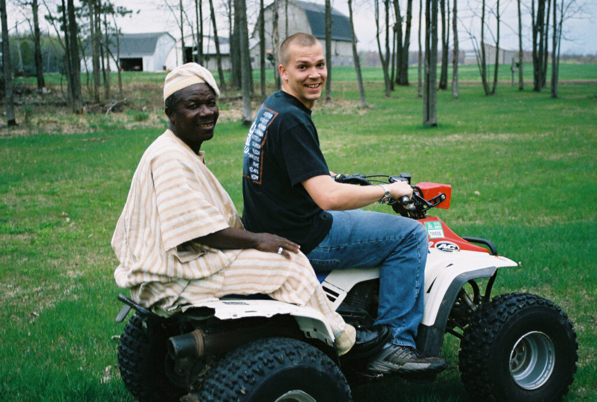
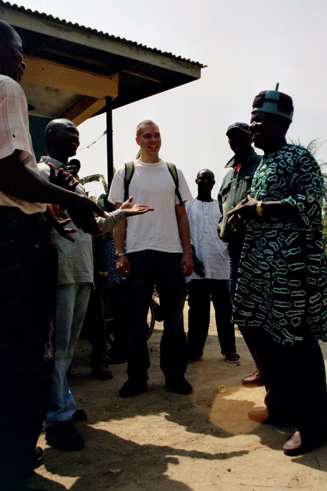
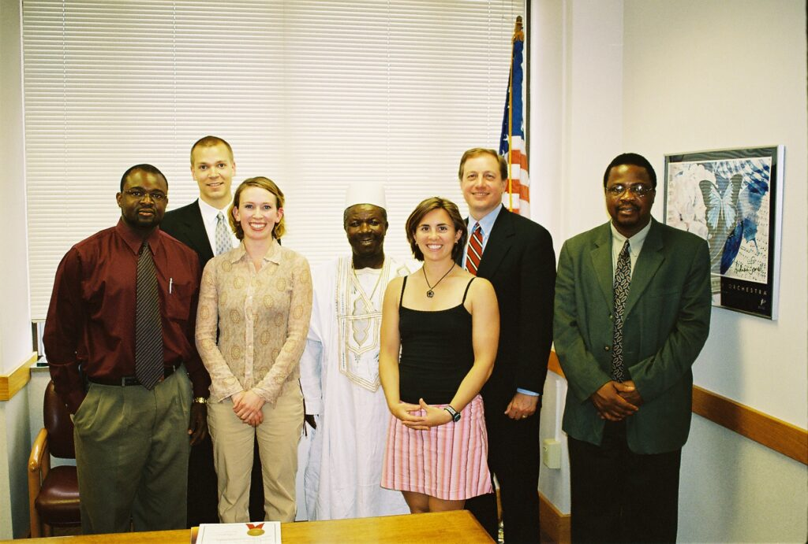
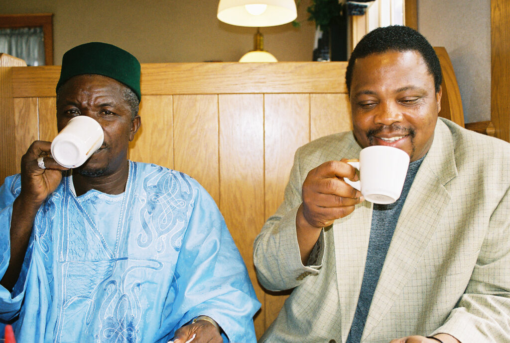

AYM Remembers Paramount Chief Alhaji Alie Badara Sheriff III of Jong – by Dennis Glover, SVP & COO, AYM

Paramount Chief Alhaji Alie Badara Sheriff III – traditional ruler of Jong Chiefdom, based in Mattru Jong in southern Sierra Leone—passed away on January 25, 2026, in Freetown, following complications from a severe gastrointestinal illness. He was laid to rest the next day in his home village of Mogerewa Jong, in keeping with family and customary rites.
The family held his seventh-day ceremony on February 8, 2026. Until the succession process concludes, the Speaker of Jong Chiefdom, Chief Francis Kpanabom, oversees the Chiefdom.
His passing closes a steady and consequential chapter in Jong Chiefdom’s history – but not a legacy shaped by discipline, service, and a firm belief that development must be practical, inclusive, and grounded in dignity.
Authority that carried responsibility
Some leaders are powerful because of what they command, and others because of what they can carry. Paramount Chief Alhaji Alie Badara Sheriff III belonged to the second kind.
His authority did not rest in regalia or title alone. It lived in the daily weight of people’s needs, in the patience to listen, and in the discipline to choose unity over noise. He understood leadership as responsibility before it was status.

Since his ascension to the chieftaincy in 2002, he led Jong Chiefdom from Mattru Jong, a historic river town shaped by trade, movement, and exchange. In such a place, leadership is never abstract. It is practical, rooted in mediation, consensus, and momentum. For him, tradition was not a barrier to progress; it was the framework through which progress became legitimate and lasting.
He consistently advocated for the things that determine whether communities rise or stall: education, basic health services, mechanized farming, improved roads, and livelihoods that allow families to plan beyond survival. He understood that development endures only when it touches ordinary life.
A chief rooted in place – and accountable to people
Jong Chiefdom takes its name from the Jong River, long an artery of commerce and connection. Mattru has always been a place where the wider world meets local life. In that reality, the role of Paramount Chief is not ceremonial – it is relational.
Over the years, Chief Sheriff supported school rehabilitation efforts, encouraged youth participation in community initiatives, and played a steady role in resolving local disputes before they hardened into division. He chaired community meetings not to dominate them, but to bring clarity and direction. Progress, in his view, required people to see themselves as part of the solution.
He ruled close to the ground. Responsibility, for him, meant presence.
Service on the national stage
Nationally, Chief Sheriff earned trust from national leaders, not just visibility.
As a Paramount Chief Member of Parliament, he served as Chair of Parliament’s Committee on Privileges and Ethics, a role that demanded restraint, credibility, and fairness during periods when public confidence in institutions was under strain. It was not a position designed for attention. It required calm judgment, procedural integrity, and moral steadiness.
His leadership style reflected those demands. He spoke clearly and deliberately. He listened closely. In every meeting, he began by acknowledging everyone present, grounding the discussion in respect before moving to outcomes.
Even during difficult national periods, most notably the Ebola crisis, the team remained in Mattru Jong, hosting national figures and participating in community mobilization. Leadership, in those moments, was not about distance or protocol. It was about presence.
AYM and the first bridge across the Atlantic
For those of us at AYM, Chief Sheriff’s life is inseparable from a relationship that became family—and from a journey that reshaped all of us.

In 2005, we hosted him in the United States for the first time. We designed the visit not as a ceremony or spectacle, but as exposure—an opportunity for him to see, ask questions, and engage directly with development models, institutions, and civic life.
We took him on an extensive driving tour of the American Midwest, moving city to city and organizing a structured speaking tour across eight educational institutions in Wisconsin. He spoke at Chippewa Falls Grade School and High School, Medford Middle and High Schools, Green Bay West High School, Madison Area Technical College, St. Norbert College in De Pere, and the University of Wisconsin–Platteville.

At every stop, he spoke plainly about life in Jong Chiefdom—about governance, agriculture, education, and the realities of post-war recovery in Sierra Leone. And just as importantly, he listened. He asked questions about local governance, education systems, and civic organization. Through conversations with children, teenagers, students, faculty, and public officials, he gained insight into how Americans debate, collaborate, and solve problems.
We also arranged formal meetings with public leaders, including the Mayor of Madison and the Dane County Executive. Those encounters reinforced his conviction that development is strongest when institutions are accessible and accountable to the people they serve.
A defining moment at UW–Platteville
The highlight of that visit was the University of Wisconsin–Platteville. After a full day of classroom engagements, the Chancellor hosted a formal dinner and campus event in his honor, attended by faculty, administrators, and alumni.
That evening, Chief Sheriff delivered a thoughtful address on Sierra Leone’s history, Jong Chiefdom’s future, and AYM’s development mission. Following his remarks, we screened a short film produced by Askia Koroma that documents AYM’s art exhibition and reflects on the civil war. The room fell silent. The exchange had moved beyond the academic. It was human.
The trip strengthened his confidence and sharpened his sense of possibility. He later reflected that the experience affirmed his capacity to serve beyond the Chiefdom and contributed to his decision to take on greater responsibility at the national level.
How the bridge reshaped us all
The impact of that journey did not end with his return home.
For me personally, it marked the beginning of a long reckoning. It would take another two and a half years—living in the same Wisconsin city, working the same job, carrying a growing sense of unrest—before I resigned and moved my life to Sierra Leone.
That, too, was part of Chief Sheriff’s legacy. He did not compel people to act. He made action feel inevitable.
A leader who made others feel capable
Chief Sheriff did not govern from a distance. When visiting the AYM headquarters in Mattru, he often walked rather than drove, greeting elders, market women, and children along the way. He rejected the posture of royalty. He saw himself as a custodian of collective effort.
He was firm without humiliation. Respected without intimidation. Traditional without using tradition as a weapon. He made people—especially young people—feel capable.
Leaders like that leave behind a particular silence: one that reveals how much they were holding together.
Legacy and the work ahead
To honor Paramount Chief Alhaji Alie Badara Sheriff III is not only to mourn him. It is to continue the work he named so clearly—education, health, livelihoods, and collaboration rooted in trust.
The bridge he strengthened between diaspora and home remains standing. The youth he believed in are still here. The work continues.
Farewell, Paramount Chief.
Thank you for the example.
Thank you for the trust.
Thank you for carrying your people with steadiness and grace.
May his memory be a blessing, and may his legacy live on through the hands of the next generation.
Dennis Glover grew up in the heart of the Midwest, where his nurturing and dynamic family instilled a strong sense of compassion. He earned a degree in Strategic Business Management from the University of Wisconsin–Madison in 2001. That education prepared him for a focused career in nonprofit leadership.
Dennis found his calling through his collaboration with Abu-Hassan “Askia” Koroma, founder of AYM. Over five years, he coordinated AYM’s art initiatives in the United States and led efforts to establish a new AYM chapter in Sierra Leone, creating jobs for local youth.
In 2006, Dennis committed the next five years to launching this initiative in Sierra Leone. He led community organizing campaigns, developed community vegetable gardens, and established the AYM Social Enterprise Center in Mattru Jong. At the Center, he installed a 24-hour renewable energy system that powered a cell phone charging business, an Internet café, and other services. He trained local volunteers to manage these programs independently, thereby strengthening the community’s sustainable development.
Dennis now lives in La Crosse, Wisconsin, where he works as an independent financial consultant. He travels to Sierra Leone frequently and speaks fluent Krio. He remains committed to empowering youth and strengthening community resilience.